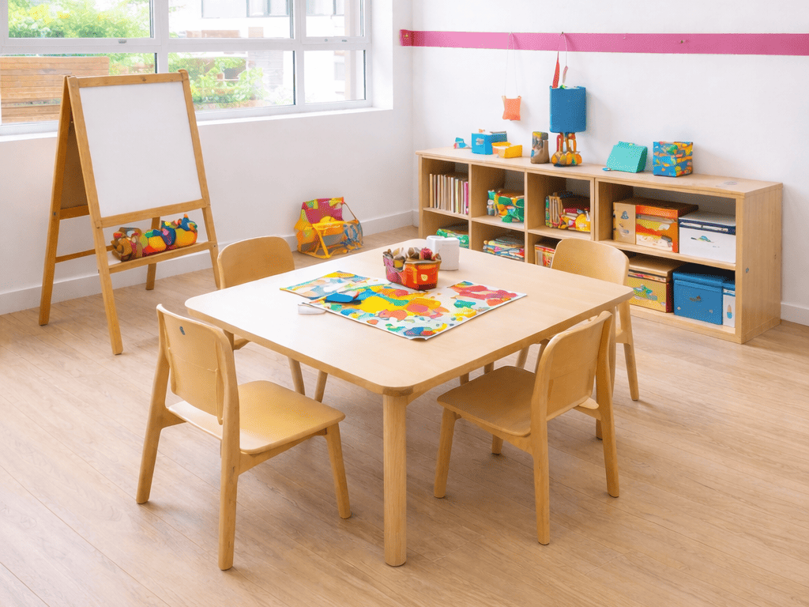
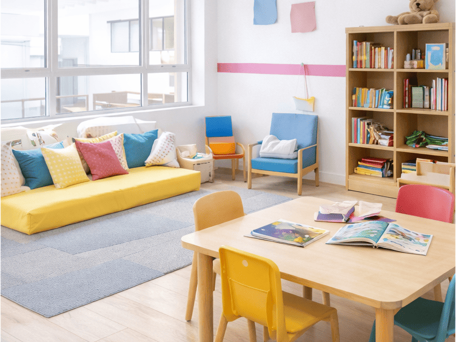
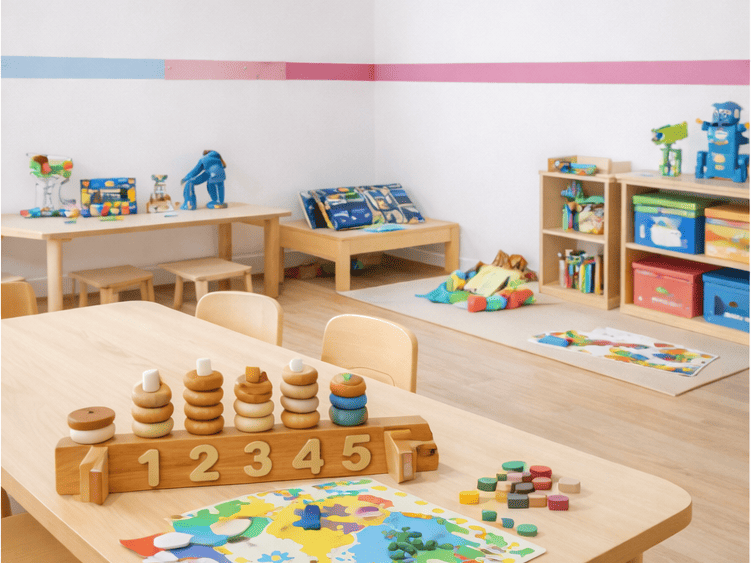

S.O.N.G. (The School of New Generation) Preschool is a unique preschool chain managed by a team of highly qualified, dedicated and experienced educationists and professionals who have taken the initiative to make S.O.N.G. a dream place for little wonders.
We believe that children need a safe, clean and hygienic environment in which they can grow and learn. As the name goes, S.O.N.G. prepares the child for school by providing the right environment for the child to make his or her transition.
Conveniently located in Hennur Gardens, Kalyan Nagar, Bangalore, S.O.N.G. is the preferred preschool and daycare choice for families across Hennur, Banaswadi, HBR Layout, and Ramamurthy Nagar. If you're searching for the best preschool or daycare near Hennur, we'd love to welcome your child.
At S.O.N.G. Preschool we believe that great parenting combined with quality education forms the foundation every child needs to unlock their full potential. Our mission is to give your child the best start in life, blending love, care, and strong early education in a fun-filled, multicultural environment.
At S.O.N.G. Preschool, we redefine early childhood education through innovation, compassion, and a future-ready curriculum designed to support confidence, curiosity, and all-round development.
Innovative curriculum: a blend of Montessori, playway and experiential learning.
Holistic development: focus on physical, emotional, cognitive and social growth.
Creative learning corners: art, music, storytelling and sensory engagement built into the day.
A safe, caring environment with strong parent communication and support.
Programmes
What We Offer
Flexible programme formats designed around learning, care, and the needs of modern families.

Half Day (Preschool)
8:30 AM to 12:30 PM | 12:30 PM to 6:00 PM | 4:00 PM to 6:00 PM
Learning is filled with fun and discovery through story time, creative play, celebrations, field trips, puppet shows, and joyful daily experiences that nurture confidence, imagination, and curiosity.

Full Day Care (Preschool + Day Care)
8:30 AM to 6:00 PM
We welcome children into a safe, caring environment with structured learning, care support, engaging activities, and a strong focus on wellbeing, routine, and healthy growth.

After School Care (Day Care + Activity Center)
13:30 PM to 6:00 PM
Children enjoy a balanced blend of learning and recreation through supervised routines, creative activities, movement-based sessions, and homework support in a warm setting.
Admissions
Admission Enquiry
Fill in the form below and our team will get in touch with you shortly.
Frequently Asked Questions
A few quick answers for parents exploring the right fit for their child.
What age groups do you cater to?
We welcome young learners across early years and daycare programs. Admissions guidance is shared based on your child's age and readiness.
What programmes are available at the branch?
We offer Half Day Preschool, Full Day Care, and After School Care, with age-appropriate activities and a nurturing learning environment.
How do I enquire about admission?
You can fill out the admission enquiry form on this page or contact us directly on WhatsApp or phone for a quick response.
Can parents visit the campus before applying?
Yes. We encourage families to schedule a visit so they can experience the environment, understand the programmes, and ask questions.
What are the school timings?
Programme timings vary by offering. The exact timing options are listed in the What We Offer section on this page.
Do you provide daycare support?
Yes. We provide full day care and after school care options designed to support working families with a safe and engaging setup.
How do you ensure child safety?
We prioritise a secure, child-friendly environment, trained staff, age-appropriate supervision, and clear parent communication.
What does a typical day look like?
A typical day blends guided learning, structured play, routines, creative activities, social interaction, and care in a balanced format.
What documents are needed for admission?
Our admissions team will guide you, but typically basic child and parent details along with required supporting documents are requested.
How soon will someone get back after submitting the form?
We aim to respond as quickly as possible, usually within one working day.
Gallery
A visual glimpse into the spaces, learning moments, and joyful experiences we aim to create.
1 / 4
Learning Spaces
Bright, child-friendly classrooms designed for curiosity and comfort.